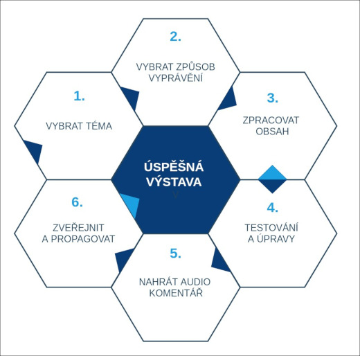

Jak vytvořit úspěšnou virtuální výstavu#
Virtuální výstava je online prezentace vybraného tématu a její přípravu lze rozdělit do 6 základních činností:

Při její tvorbě plníte jednotlivé obrazovky obsahem - obrázky, texty, přidáváte hudbu, namluvený komentář nebo pro návštěvníky připravíte hry. Příprava výstavy se skládá ze dvou hlavních částí rozdělených do 6 základních kroků:
- Příprava tématu a obsahu výstavy
- Samotná tvorba v nástroji INDIHU Exhibition

Vytvářím svou první výstavu#
Udělat svou první výstavu je nejtěžší a moc si vážíme toho, že jste se rozhodli použít náš nástroj. Abychom vám tento proces zjednodušili, připravili jsme pro vás sadu pracovních listů, které vám pomohou vytvořit scénář virtuální výstavy.
Tip
Pracovní listy doporučujeme vytisknout a vyplnit s tužkou v ruce. Mají podobu mentální a pojmové mapy.
Téma výstavy#
Nejprve je třeba vybrat téma a najít ten správný přístup k jeho vyprávění. Virtuální prostředí funguje jinak, než jak jsme zvyklí u fyzických výstav, a online návštěvníci mají trochu jiná očekávání, kterým bychom se měli přizpůsobit, aby naše výstava byla úspěšná.
Tip
Preferujte kompaktní témata a pokud možno se vyvarujte složitě strukturovaným problémům.
Obsah výstavy#
Nyní můžete začít zpracovávat vlastní obsah výstavy. Napište všechny potřebné texty a vyhledejte si co největší množství vizuálního materiálu. Nejdůležitějším hlediskem přípravy výstavy je srozumitelnost obsahu, proto se zaměřte na jeho logické členění, buďte konkrétní a věcní.
V druhé fázi práce se zamyslete nad tím, jak byste mohli popisný text nahradit zajímavějším typem obsahu. Nejpříhodnější bývají videoklipy. Využijte také svoji kreativitu a vymyslete pro návštěvníka hru (pokročilejší funkce), jejichž uplatnění ve výstavě vám nástroj nabízí.
Tip
Ne všechny informace jsou stejně důležité! Uvědomte si, která část obsahu je hlavní a co jsou pouze dodatečné materiály, které můžete připojit ke stažení.
Forma výstavy (způsob vyprávění tématu)#
Při tvorbě vlastní virtuální výstavy v nástroji Indihu Exhibition plníte obrazovky obsahem. Obrazovky je dále možné sdružovat do kapitol nebo je možné výstavu sestavit z jednotlivých obrazovek jdoucích po sobě. Oba principy můžete rovněž kombinovat.
Tip
Rozmyslete si, jak budete obsah výstavy rozvíjet a členit, jak budou jednotlivé části obsáhlé? Podle toho si lépe rozhodnete, zda budete používat jednotlivé izolované obrazovky, nebo budete téma strukturovat do kapitol.
Doporučené funkce pro začátečníky#
Jednotlivé obrazovky a jejich funkce jsou podrobně popsány v záložce Obrazovky. Záčínáte-li si teprve tvorbu virtuálních výstav osvojovat, doporučujeme zaměřit se zejména na tyto typy obsahu:
Obrazovky s obrázky#
Při přípravě výstavy se zaměřte zejména na obrazový materiál a jeho kvalitu. V současné vizuální době přitáhnou pozornost zejména obrázky nebo videa.
Pokud si obrazový materiál připravujete sami, doporučujeme použít kvalitní fotoaparát. Rovněž se ujistěte, že fotografie mají dobrou kompozici, jsou správně nasvícené a mají kvalitní pozadí. Samozřejmě pokud máte tu možnost usnadnit si práci, nechte nafotit vše potřebné profesionálním fotografem. U obrazovek s obrázky je důležité načasování. Nastavte čas v editoru tak, aby si návštěvník mohl obrazový materiál v klidu prohlédnout. Pro zvýraznění informační hodnoty obrázků využijte infopointy. Ty mohou kromě krátkého textu obsahovat i další obrázek v podobě komparačního materiálu, detailu apod.
Tip
Přestože vám radíme, abyste se při přípravě virtuální výstavy zaměřili na její vizualitu, tak i tady platí heslo, že méně je více. Předejdete tak nechtěnému vizuálnímu přesycení návštěvníka.
Příprava obrazových dat a postprodukce#
Obrázky připravujte v rozlišení minimálně full HD (1920×1080) s rozlišením 72 dpi a ve formátu .png nebo .jpg. Obrázky s orientací na šířku fungují obecně lépe. Obrázky, které prezentujete ve výstavě, mohou mít jiný formát, rozličnou barevnost nebo styl. Díky postprodukci je můžete sjednotit, nebo přidat zajímavé detaily pro ozvláštnění. Výstava pak bude fungovat jako celek, i když zdrojové materiály budou rozdílné. Příklady dobré praxe naleznete v části [Inspirace] (inspirace.md).
Při přípravě výstavy využijte tyto typy obrazovek: - Obrazovku s obrázkem - Slideshow - Fotogalerii - Animaci přiblížení
Texty#
Kvalitní texty mohou přinést návštěvníkům nové informace a probudit jejich zájem o prezentované téma. Musí být ale stručné! Doporučujeme nevkládat texty delší než 500 znaků! Průzkum návštěvnické spokojenosti virtuálních výstav jasně ukázal, že delší texty návštěvníci nečtou. Při přípravě textů se držte těchto doporučení:
- Pokud možno, vyhněte se odborným výrazům.
- Pište kratší věty, jsou srozumitelnější.
- Nejzajímavější informace dejte na začátek textu a nespoléhejte se na to, že návštěvník dočte až do konce.
- Podrobnější informace můžete připojit v samostatném souboru k výstavě a/nebo ke každé obrazovce, předejdete tak neúnosnému přehlcení hlavního obsahu.
- Pro zvýraznění krátkého textu využijte obrazovku s textem, která se hodí např. pro citáty nebo zopakování klíčových informací.
V případě, že chcete pro návštěvníky připravit dokumenty ke stažení s podrobnějšími informacemi, můžete je připravit v následujících formátech: .pdf, .txt, .docx. Doporučujeme především využití formátu .pdf, u kterého nedojde ke změně formátování.
Jasné názvy kapitol a obrazovek#
Pojmenujte jednotlivé kapitoly i obrazovky jednoduše a atraktivně, aby návštěvník věděl, na co se může těšit. Dlouhé a složité názvy ho spíše zmatou. Případné podrobnosti můžete vepsat do doprovodného textového boxu.
Tip
Inspirujte se například novinovými titulky, které mají za úkol návštěvníka ke čtení textu navnadit, protože vy jako tvůrce výstavy potřebujete dosáhnout stejného cíle.
Zvukové stopy (audio komentář a hudba)#
Z finálních textů můžete namluvit audio komentář. Usnadníte tak divákovi vnímání obsahu výstavy, protože nebude muset číst. V dnešní době je nejjednodušší za tímto účelem využít mobilní telefon, ale pokud budete mít možnost, svěřte tento úkol profesionálům, na výsledku to bude znát. Podle délky komentářů nastavte načasování u jednotlivých obrazovek, ke kterým komentář náleží.
Tip
Doporučujeme si připravit audio komentář pro každou obrazovku samostatně, bude se vám lépe nastavovat jejich časování.
Produkce audio komentáře nemusí být snadná, ale přidání hudebního podkresu ke kapitole výstavy je jednoduché a výstava tak získá větší atmosféru.
Tip
Pro začátečníky doporučujeme přidat hudbu ke každé kapitole zvlášť. Zvuková stopa se tak bude přehrávat ve smyčce a vy si nemusíte lámat hlavu s načasováním.
Interaktivní obrazovky#
Interaktivní obrazovky jsou druhy obrazovek, které poskytují návštěvníkům možnost drobné interakce, ale nejsou náročné na vytvoření a jsou vítaným ozvláštněním výstavy. Jejich podoba opět stojí zejména na obrázcích.
Při přípravě výstavy využijte tyto typy interaktivních obrazovek: - Slideshow: Tato obrazovka návštěvníkovi přehrává vizuální materiál v řadě za sebou. - Před a po: Tato obrazovka umožňuje prezentovat dva obrázky, které se doplňují, nebo naopak kontrastují, a návštěvník je může sám porovnávat. - Obrazovka s externím obsahem: Máte zajímavý obsah uveřejněný v jiné aplikaci? Díky této obrazovce ho můžete jednoduše integrovat do výstavy a to včetně zachovaní interaktivity, který obsah na jiné stránce nabízí. Příkladem mohou být např. mapové aplikace nebo video.
Testování#
Poproste někoho mimo tvůrčí tým výstavy o názor. Například kolegu, který s vámi na výstavě nepracuje, ale nejlépe někoho, kdo není z vašeho oboru. Ptejte se, čemu nerozumí a podle jeho postřehů výstavu upravte.
Tip
Především si uvědomte, jestli návštěvník stráví na výstavě opravdu tolik času, kolik jste naplánovali a podle toho upravte její délku.
Doporučené funkce a postupy pro pokročilé tvůrce#
Máte-li za sebou již svou první výstavu nebo dokonce několik, doporučujeme vám vyzkoušet pokročilejší funkce a zejména do větší hloubky pracovat s různými cílovými skupinami. Můžete tak udělat výstavy určené speciálně pro konkrétní cílové skupiny nebo udělat výstavy v několika verzích (složitější pro dospělé, hravější a jednodušší pro děti).
Videoklipy#
Vedle použití již existujících videoklipů si můžete pro výstavu připravit unikátní video stopy, čímž zásadně ozvláštníte obsah. Videa by neměla být příliš dlouhá (doporučujeme 1 min, max. 3 min). A při jejich tvorbě se opět zaměřte na poctivou přípravu scénáře. Můžete využít různé žánry:
- Dokumentární film
- Rozhovor s pamětníkem či odborníkem
- Animace
- Hraný film
Video připravujte v rozlišení FullHD (1920×1080), 25 snímků za vteřinu, v renderovacím formátu H.264. Pro tento typ obsahu opět použijete Obrazovka s externím obsahem.
Parallax#
Parallax je speciální typ pohyblivého obrázku. Tohoto zajímavého efektu se docílí tím, že se obrázek nahraje v několika vrstvách, z nichž se každá pohybuje zvlášť. Příprava parallaxu je náročnější, jak na představivost, tak na vlastní produkci.
Nelineární procházení virtuální výstavou#
Přemýšlíte o virtuální výstavě jako o prostoru, který si může návštěvník projít podle své volby? Chcete jeho zájem koncentrovat podle jeho nálady, zvědavosti či úrovni vědomostí? V tomto případě můžete využít funkci nelineárního procházení virtuální výstavou. Je to jedna z nejvíce pokročilých funkcí a na vás jako na tvůrce klade velké nároky na promýšlení struktury výstavy. Návštěvníkovi ale tímto způsobem můžete nabídnout přeskočení vybraného obsahu. Podrobněji vás s funkcí seznámí tento videoklip. / Podrobnější informace naleznete v této záložce. Pro takový typ obsahu použijte Obrazovku nelineárního procházení výstavou.
Hry#
Interaktivita a možnost se přímo zapojit do procesu konzumace virtuálního obsahu je již běžnou součástí vnímání na internetu a návštěvníci jsou na takové chování ve virtuálním prostředí zvyklí. Nástroj INDIHU Exhibition nabízí zapojit do výstavy několik typů her, jejichž podrobnější vysvětlení naleznete v samostatné záložce. Některé z nich mají jasné řešení a jsou vhodnější pro ověření znalostí a pozornosti. Znalostními hrami můžeme téma otevřít a zjistit vstupní úroveň vědomostí, které zbytkem obsahu výstavy doplníme a rozvedeme, nebo je naopak zapojit na závěr jako jednoduchý způsob všechny prezentované informace shrnout. Mezi tyto hry patří:
- Kvízy
- Najdi na obrázku
- Hádej velikost
- Posuň na správné místo
Dalšími typy her jsou hry kreativní, které nemají jednoznačné řešení. Tyto jsou vhodnější k rozvoji imaginace, podpoření tvořivosti a umožní návštěvníkům se samostatně vyjádřit. Mezi tyto hry patří:
- Dokresli/Domaluj
- Stírací los (Setři)/Odtesej
Zrealizujte návštěvnický průzkum a využijte participativní metody přípravy výstavy#
Ověřte si, co nejvíce zajímá vaše návštěvníky a ušijte jim výstavu na míru. Můžete o navržených tématech uspořádat anketu na webu nebo na sociálních sítích. Další možností je uspořádání hlubšího průzkumu přímo v konkrétní cílové skupině. Na přípravě výstavy můžete dále spolupracovat s místními školami nebo jinými institucemi z oblasti neformálního vzdělávání. Rozšíříte tím dosah výstavy i samotné portfolio vašich aktivit.
Tip
Například klub místních amatérských fotografů nebo filmový kroužek se může podílet na tvorbě náročnějšího mediálního obsahu.
Zaměřte se na propagaci výstavy#
Propagace výstavy může do velké míry ovlivnit její dosah a úspěšnost. Připojujeme pro vás několik tipů:
- Vytvořte video upoutávku na výstavu (tzv. teaser).
- Připravte kampaň na sociální sítě a upozorňujte na výstavu v dostatečném předstihu. Jasně formulujte, co návštěvníci díky zhlédnutí výstavy získají.
- Načasujte výstavu na nějaké významné datum, nebo ji spojte s další offline událostí. Můžete například zorganizovat i vernisáž.
- Oslovte místní média a připravte tiskovou zprávu, nebo novinářům nabídněte rozhovor s autory.
- Nabídněte virtuální výstavu pro volnočasové či školní vzdělávání, čímž připravíte komplexnější využití vaší práce.
- Připravte doprovodný edukační materiál pro návštěvníky výstavy či pro školy v podobě pracovního listu.